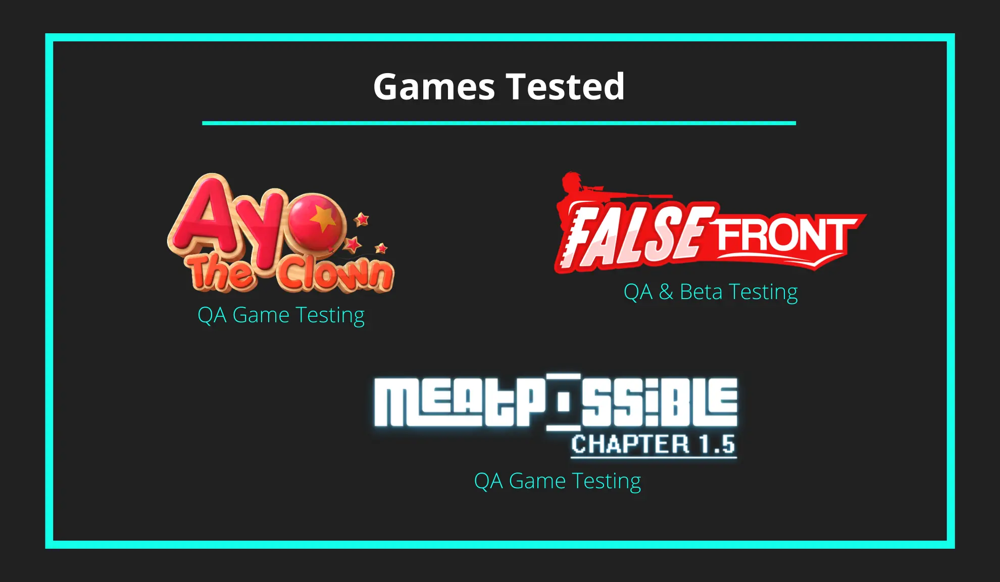
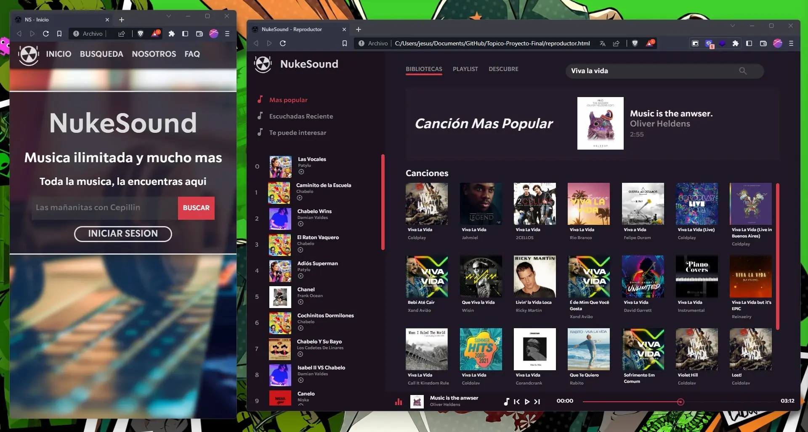
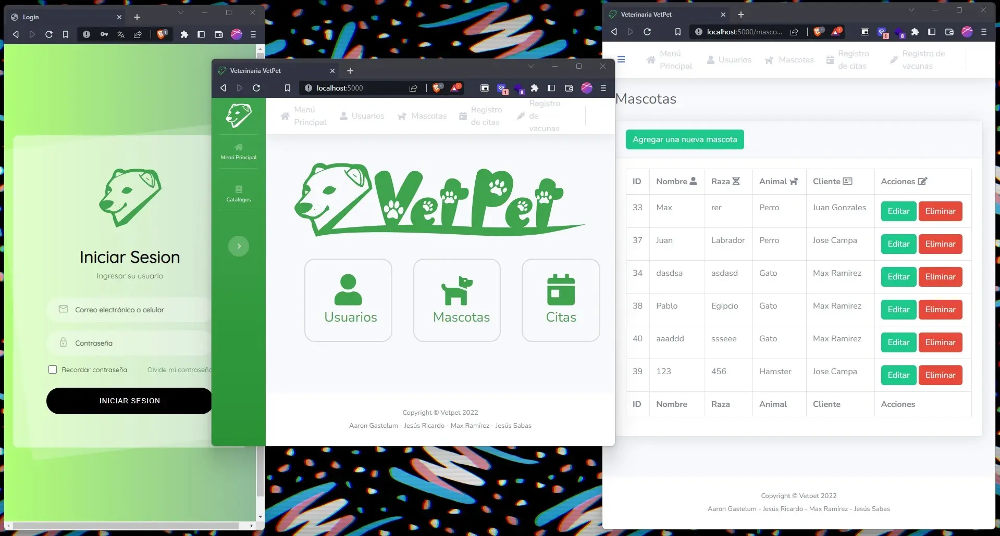
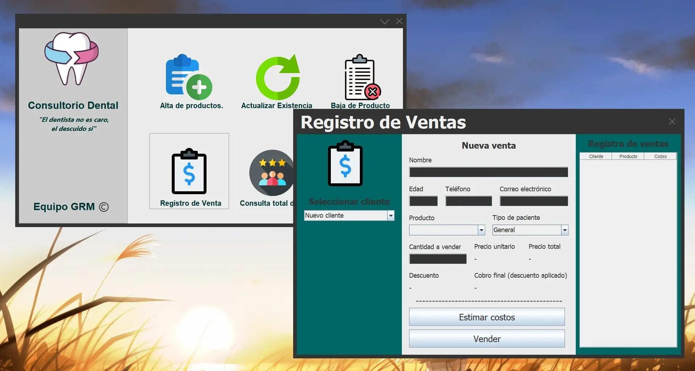
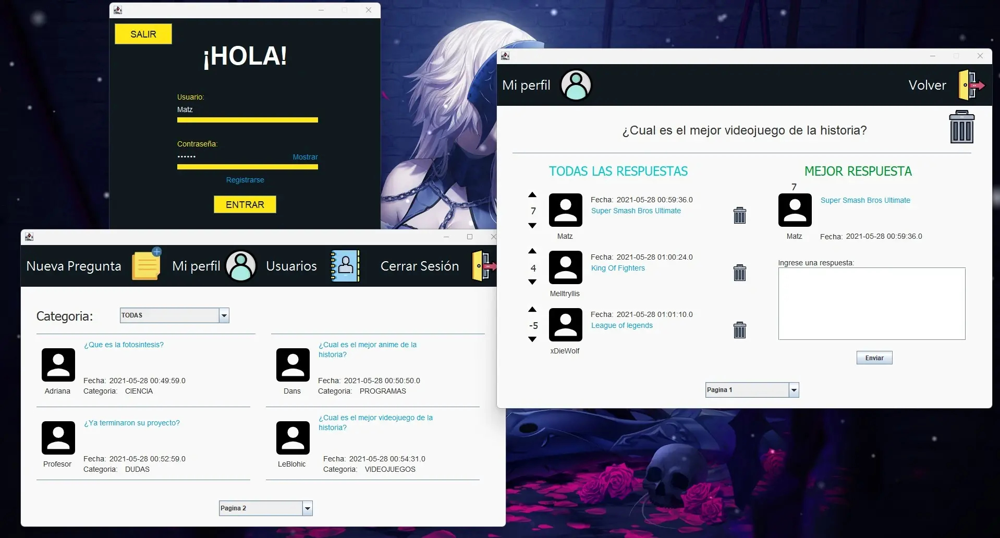
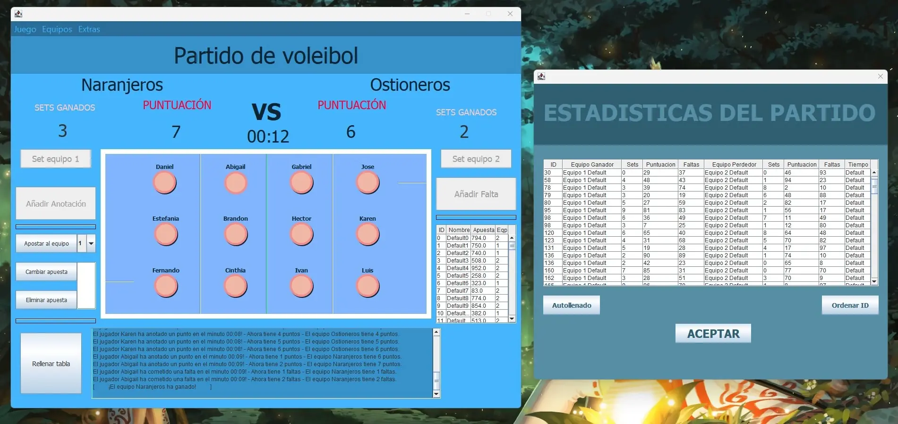

Completed an internship at Clever Cloud as a software engineer. My primary role was frontend development using VueJS, Bootstrap and Metronic. As the program required exposure to all areas of the stack, I also contributed to backend work, building APIs and writing their documentation in PHP and MySQL. SourceTree was used for version control throughout the project.
HTML/CSS/JS
VueJS
Bootstrap/Metronic
PHP
MySQL
Git/SourceTree
2023
Freelance Projects
Videogame Tester

These are some of the games where I have served as Quality Assurance tester. I handled QA testing for Ayo the Clown and Meatpossible. For False Front, I was additionally responsible for beta testing and contributed to the Spanish translation during the early stages of development.
QA
Beta Testing
Translation
2018 - Present
College Projects
NukeSound

A responsive music player interface. The application consumes an external API to search for music, serving as a demonstration of basic functionality and responsive design principles.
HTML/CSS/JS
2022
Veterinary Management

Web application for managing a veterinary clinic, originally developed in CodeIgniter and later migrated to plain HTML/JS with Flask in order to practice integration with different frameworks. The system handles the core processes of a pet clinic, including patient records, appointments and treatments.
HTML/CSS/JS
Flask
MySQL
Bootstrap
2022
Dental Office

Management system for a dental office, built in Java. The application handles all inventory-related processes and includes a basic sales module.
Java
MySQL
Hibernate
2021
Q&A Forum

Java application where users can submit and respond to questions stored in a MySQL database. Answers can be rated positively or negatively, with the highest-rated response being highlighted as the accepted answer.
Java
MySQL
Hibernate
2021
Volleyball Match Control

Application designed to keep track of volleyball matches. A visual, point-and-click interface was chosen to ensure an intuitive user experience. The system also allows for customization of team information.